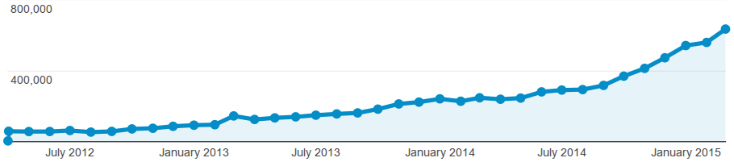
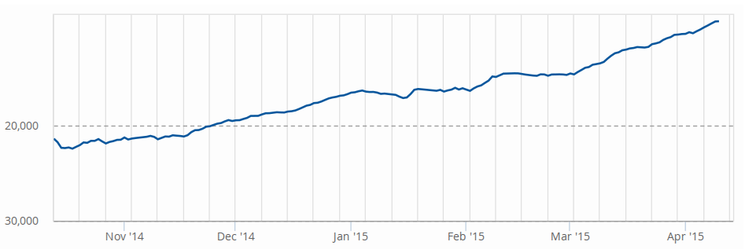
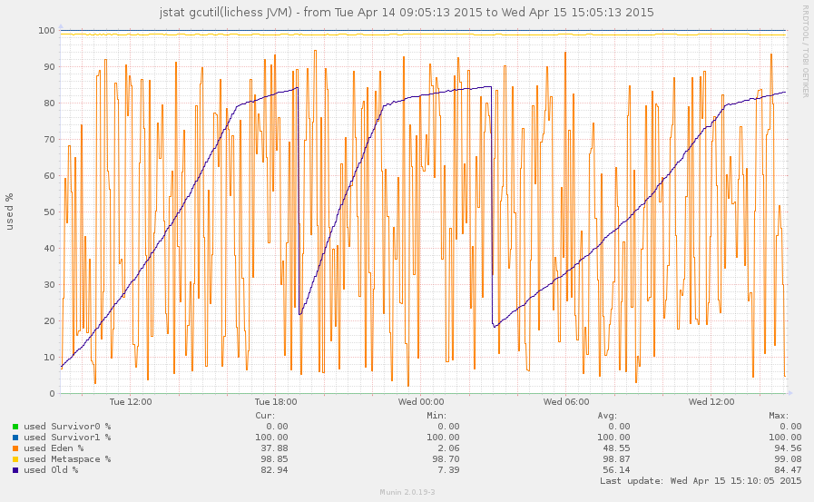
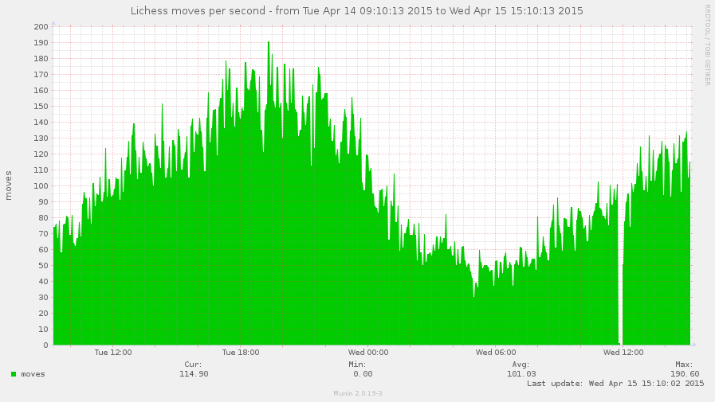
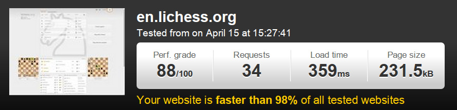
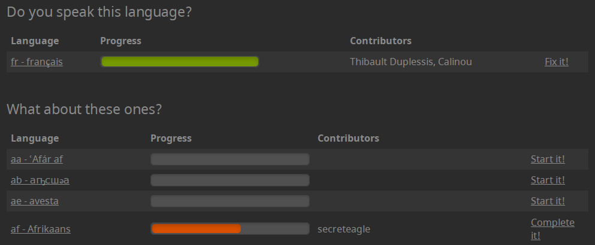
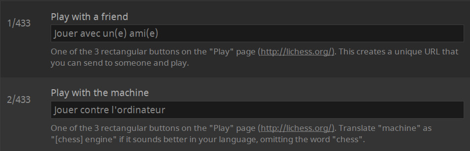

lichess.org
an open source service
Hi, I'm Thibault Duplessis
Software engineer at Zengularity*
By day, I build prismic.io
By night, I build lichess.org
*Zengulary is quite awesome, by the way. You should be working there.
Numbers!
634,000 unique visitors
per month

Doubling every year
Ranked 12,586 on Alexa

second most popular chess website
MOAR NUMBERS
| 102 | moves per second |
| 180,000 | games per day |
| 67,000,000 | games in the DB |
Funds raised:
$0.00
OMG
COMMUNISTS
Why?
Yes, why not monetize that sh*t?
Software is like sex
it's better when it's free
How?
Technological domination
Fight tech debt
Refuse the hacks
or
Delete your code
2010
PHP 5.2
symfony 1
MySQL
jQuery
2010 ½
PHP 5.3
symfony 1
Diem CMS
file tgz (!)
jQuery
2011
PHP 5.3
Symfony2
MongoDB
jQuery
2011 ½
PHP 5.3
Symfony2
scala
MongoDB
jQuery
2012
scala
Play 2.0-Alpha
IO monad
MongoDB
jQuery
2013
scala
Play 2.x
concurrent.Future
MongoDB
jQuery
2014 - current
scala
Play 2.x
concurrent.Future
MongoDB
virtual DOM (mithril.js)
poor competition
is lagging behind
stuck with aging codebases
A modern language
package lila.game
case class Game(
white: Player,
black: Player,
clock: Option[Clock])
val game = Game(carlsen, anand, None)
game.white // carlsen
runs on JVM
- Portable
- Compatible
- Safe
- Fast
Functional programming
as opposed to
dysfunctional programming
Immutability
- Expressive code
- Equational reasoning
- Control side effects
- Laugh at race conditions
strong static typing
- Trust the types
- Refactor with confidence
- Write less tests
- Less runtime errors
But with inference!
// Explicit typing
val isBaconBackgroundNecessary: Boolean = false
// Boolean type infered from the value
val isBaconBackgroundNecessary = false
Functional programming
+
Strong static typing
=
Code maintainability
poor competition
is lagging behind
stuck with "dynamic",
dysfunctional languages
| 2k | queries per second |
| 300 | writes per second |
| 124M | documents (in 53 collections) |
| 70GB | of (compressed) data |
| 22GB | of indexes (in RAM) |
The good
- Indexes
- Aggregation framework
- JavaScript data migrations
- Data is actually stored (not in /dev/null)
The less good
No schema
No guaranty that data is well formed
Better used with well typed language?
No "JOIN"
Queries operate on a single collection
Relations are implemented on application side
Manual compression
// one game
{
"_id": "fuzvD3cZ",
"c": BinData(0, "AwAAA3BFKSUAAAAA"),
"ca": ISODate("2015-04-11T19:52:55.428Z"),
"cl": BinData(0, "+GIAAVs="),
"is": "LUCF3PDh",
"mt": BinData(0, "SBQSeUZQ"),
"pg": BinData(0, "GxwTc6BSgG2AQ0heQF5M3oQBIg=="),
"ps": BinData(0, "MFAVQ2YABmYAQGAAAGYA0AAOAAAAAAwA7uzu7rAAnQs="),
"ra": true,
"s": 35,
"so": 1,
"t": 11,
"ua": ISODate("2015-04-12T08:28:39.890Z"),
"us": [
"cabalchess",
"senya9779"
],
"wid": "cabalchess",
"w": true,
"tv": ISODate("2015-04-14T07:20:44.738Z")
}
one game = 570 bytes
MongoDB 3.0 fixes it
With the new WiredTiger storage
Infrastructure
How we host 180,000 games a day
One server...
- Intel Xeon E5-1620v2 4c/8t
- 64 Go DDR3 ECC 1600MHz
- 160 Go SSD
- 1 Gbps
- $130 per month
... does it all
- scala application
- MongoDB
- Elasticsearch
- nginx
- monitoring
Someone said redundancy?
You're right, there isn't
Keeping things simple and cheap
Free service can fail
It worked so far, Insha'Allah
Uptime this year
99.92%
Distributing processing
of artificial intelligence
Chess A.I. are CPU hogs
Players want A.I. games and analysis
Community to the rescue!
8 servers donated to the A.I. cluster
Keep it running
understand why it fails
munin
Monitor JVM garbage collection
If old gen minimum goes up, you're screwed
munin
Write custom plugins
health-check scripts
That wake you up at night
var addFail = function(v) {
fail += v;
if (fail >= failAlert) {
sendSms('fail = ' + fail);
fail = 0;
}
};
Keep it fast
Backend speed
root@lichess-main# siege en.lichess.org
** Preparing 15 concurrent users for battle.
Availability: 100.00 %
Response time: 0.00 secs
Monitor it to spot perf regressions
Frontend speed
- Make less requests
- Use a CDN
- Pick small JS libraries
Mobile App!
Free, open source, no ads
Community driven
But native dev sucks...
Cordova + tarifa
HTML / CSS / JS / virtual DOM
Reuse website frontend code
Build once, run on Android & iOS
https://github.com/veloce/lichobile
Community
put dem users to work!
Translations
Translations
Provide contexts
Code contributions
Open source service
!=
Open source library
Filter contributors
Bad contributors have a negative impact
Good contributor
- Experience
- Autonomy
- Involvment
Filter contributions
Someone codes a nice feature
-> You get to maintain it
Bugfix > Feature
Love people who get boring things done
Pick a few promising talents
- Teach them
- Give them motivating/fun features
- Let them scratch their itch
Watch out for
- Perfs cost
- Complexity cost
- Assume only you get the big picture
Design contributions
- lots of crap
- people get emotional
- stick with few great contributors
Common pitfalls
Beware of talkers
They waste doers time
The stamp effect
People want to impact the project
Just because it looks like they can
"It was better before"
Whatever you do
Someone will hate it
Give up control
- Distribute responsibilities
- Build up human shields
- Focus on what you do best
Bus factor

The need for a dictator
- Cut the crap
- Take unpopular decisions
- Prevent paralysis
Prepare to
Deal with arseholes
Trolls
Don't waste time
Just shadow-ban
(have mods do it)
DDoS attacks
- Let the hosting company deal with it
- Tweak iptables and kernel network config
Applicative attacks
- Yay, people actually read my code!
- Free security audit \o/
- Wake up at night D:
Cheating
Attacks on the holy rating
Stupid cheats
Poor things copy-paste moves from an engine
Automate the whole detection/ban process
Smart cheats
Automated cheating
Coders looking for a challenge
Can be reasoned with
Evil cheats
Like smart cheats
but cannot be reasoned with
The double bot attack
Open source service
It works
and it's fun